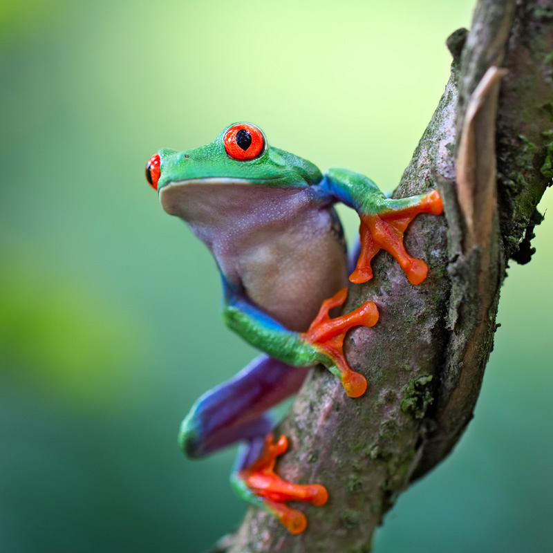

In the heart of lush landscapes, an overlooked world thrives – that of tiny frogs. These minuscule amphibians, often no bigger than a coin, have a captivating presence in rainforests worldwide. Despite their size, these frogs play a significant role in understanding evolutionary patterns and the delicate balance of nature, demonstrating their adaptability.
One remarkable example is the Lilliputian Aquaorbis, a species of tiny frog recently discovered deep within the Amazon rainfores. These frogs have adapted to life beneath the lush canopy by developing transparent skin. This cunning adaptation serves a dual purpose: it allows them to camouflage seamlessly into their surroundings, evading predators, while also enabling researchers to observe their internal organs easily.
As we peer into the world of these tiny wonders, we're reminded that beneath the towering canopies of the rainforests, a universe of beauty thrives in miniature dimensions, awaiting discovery by those willing to take a closer look and help in their crucial conservation.